強化学習モデル: ベイズ推定(1)
認知モデリングの推奨実践法
Busemeyer & Diederich(2010), Heathcote (2014), Palminteri et al.(2017)を参考にまとめると，以下のような感じになります。
- A 認知課題と認知モデルを準備
- B 人工データ生成とパラメータリカバリーを確認（モデルや課題の修正）
- C データ収集と行動データを確認
- D パラメータ推定
- E 相対モデル比較
- F モデル・シミュレーションと選択的影響テスト
「強化学習モデル: 最尤推定」ではABCDとすすめてきました。今回は，ベイズ推定をcmdstanを使って行ってみます。そこで，一度Bに戻ってからDに取り組みます。
使用するRパッケージ
適宜必要なパッケージをインストールしてください。cmdstnrのインストールは，こちらをご確認ください。
rm(list = ls())
library(tidyverse)
library(cmdstanr)
library(rstan)
library(posterior)
library(bridgesampling)B 人工データ生成とパラメータリカバリーを確認（モデルや課題の修正）
人工データの生成
改めて人工データを生成するために，実験状況の入ったsim_dataの準備とq_learning_sim関数とq_learning_ll関数の準備をします。
sim_data <- tibble(trial = 1:80,
prob_s1 = rep(c(0.2, 0.8), each = 40),
prob_s2 = rep(c(0.8, 0.2), each = 40),
reward_s1 = ifelse(runif(80) < prob_s1, 1, 0),
reward_s2 = ifelse(runif(80) < prob_s2, 1, 0))
q_learning_sim <- function(alpha, beta,data) {
#変数の準備
value_s1 <- 0 # s1の価値(初期値は0)
value_s2 <- 0 # s2の価値(初期値は0)
current_choice <- NULL # ある時点の選択（1=s1，0=s2）
choice_prob_s1 <- NULL # s1の選択確率
reward <- NULL # 報酬
# Qlearningモデル
for (i in 1:nrow(data)){
# s1を選ぶ確率を計算し,一様分布から発生させた乱数が行動選択確率よりも小さい時に1（s1），大きい時に0（s2）
choice_prob_s1[i] <- exp(beta*value_s1[i])/(exp(beta*value_s1[i])+exp(beta*value_s2[i]))
current_choice[i] <- as.integer(runif(1,min=0,max=1) <= choice_prob_s1[i])
#FBを報酬(r)として、価値の更新を行う。
if (current_choice[i] == 1){
reward[i] <- data$reward_s1[i]
#予測誤差の計算
prediction_error <- reward[i] - value_s1[i]
#予測誤差を使ってs1の価値を更新する
value_s1[i+1] <- value_s1[i]+alpha*prediction_error
#s2は更新なし
value_s2[i+1] <- value_s2[i]
}else{
reward[i] <- data$reward_s2[i]
#予測誤差の計算
prediction_error <- reward[i] - value_s2[i]
#予測誤差を使ってs2の価値を更新する
value_s2[i+1] <- value_s2[i]+alpha*prediction_error
#s1は更新なし
value_s1[i+1] <- value_s1[i]
}
}
result <- data.frame(trial = data$trial,
value_s1 = value_s1[1:nrow(data)],
value_s2 = value_s2[1:nrow(data)],
prob_s1 = choice_prob_s1,
choice = current_choice,
reward = reward)
return(result)
}
q_learning_ll <- function(alpha, beta,data) {
#変数の準備
value_s1 <- 0 # s1の価値(初期値は0)
value_s2 <- 0 # s2の価値(初期値は0)
prob_s1 <- NULL # s1の選択確率
ll <- 0 # 対数尤度
# Qlearningモデル
for (i in 1:nrow(data)){
# s1を選ぶ確率を計算
prob_s1[i] <- exp(beta*value_s1[i])/(exp(beta*value_s1[i])+exp(beta*value_s2[i]))
#FBを報酬(r)として、価値の更新を行う。
if (data$choice[i] == 1){
#予測誤差の計算
prediction_error <- data$reward[i] - value_s1[i]
#予測誤差を使ってs1の価値を更新する
value_s1[i+1] <- value_s1[i]+alpha*prediction_error
#s2は更新なし
value_s2[i+1] <- value_s2[i]
# 対数尤度の計算のために選択したs1を選ぶ確率の対数を加算
ll <- ll + log(prob_s1[i])
}else{
#予測誤差の計算
prediction_error <- data$reward[i] - value_s2[i]
#予測誤差を使ってs2の価値を更新する
value_s2[i+1] <- value_s2[i]+alpha*prediction_error
#s1は更新なし
value_s1[i+1] <- value_s1[i]
# 対数尤度の計算のために選択したs2を選ぶ確率の対数を加算
ll <- ll + log(1-prob_s1[i])
}
}
result <- data.frame(trial = data$trial,
value_s1 = value_s1[1:nrow(data)],
value_s2 = value_s2[1:nrow(data)],
prob_s1 = prob_s1,
choice = data$choice,
reward = data$reward)
return(list(result = result, ll = ll))
}alpha = 0.3, beta = 2で，シミュレーション・データを生成します。
set.seed(1234)
data_1 <- q_learning_sim(alpha = 0.3, beta = 2, sim_data)cmdstanrでの推定
Stanコードの作成
“q_learning.stan”というファイルを作成して，以下のコードを書き込みます。Stanは統計モデリング用のプラットフォームで，MCMCサンプリングによるベイズ推定，変分推定，最適化による最尤推定が可能です。Stanでは，data,parameters,modelのようにブロックごとに指定をして，書いていきます（この３つが最小限のブロック数かと思います）。dataブロックでは入力するデータについて記述します（型と範囲の指定が必要です）。parameterブロックでは，推定するパラメータについて記述します（型と範囲の指定が必要です）。modelブロックでは，データとパラメータを用いた生成モデルの記載をします。なお，データ~分布(y ~ normal(mu, sig))のような形で記述もできますし，target += 対数尤度のように，対数尤度でも記述ができます。以下は，Q学習の推定用のコードですが，グリッドサーチで用意したものに比べて，すっきりしているかと思います。
data {
int<lower=1> trial;
int<lower=1,upper=2> choice[trial]; // 1 or 2
int<lower=0,upper=1> reward[trial]; // 0 or 1
}
parameters {
real<lower=0.0,upper=1.0> alpha; //学習率
real<lower=0.0> beta; //逆温度
}
model {
//学習率と逆温度の事前分布の指定はしていないので，parametersで指定した範囲の無情報事前分布が使われる
matrix[trial,2] Q;
Q[1, 1] = 0;
Q[1, 2] = 0;
for ( t in 1:trial) {
// 対数尤度を足す
target += log(exp(beta*Q[t,choice[t]])/(exp(beta*Q[t,choice[t]])+exp(beta*Q[t,3-choice[t]])));
if (t < trial) {
// 選択された選択肢のQ値の更新
Q[t+1,choice[t]] = Q[t, choice[t]] + alpha * (reward[t] - Q[t, choice[t]]);
// 選択されなかった選択肢は更新しない
Q[t+1, 3- choice[t]] = Q[t, 3- choice[t]];
}
}
}Stanコードがstanファイルとして保存できたら，cmdstan_model()コンパイルします。Rは便利ですが計算は遅い言語なので，c++のような高速な計算が可能な言語にコンパイルをします。ちなみに，stanをRで使う場合は，Rstanを使うことが多かったのですが，最近は，cmdstanrが開発されており，こっちのほうがコンパイルもサンプリングも早いのでおすすめです。
q_learning <- cmdstan_model('q_learning.stan')最尤推定
コンパイルができたら，最適化による最尤推定をしてみましょう。最尤推定は，「強化学習モデル: 最尤推定」 でも見てきたように，optimやpsoなどのRパッケージでできますが，ここではstanで最尤推定値を推定します。コンパイルしたモデル$optimize()で推定ができます。
mle_cmdstan <- q_learning$optimize(
data = list(trial = nrow(data_1),
reward = data_1$reward,
choice = data_1$choice + 1),
seed = 123)
mle_cmdstan$summary()パラメータリカバリ（最尤推定）
stanのoptimizeを用いた最尤推定のパラメータリカバリをします。αは0.1から1の範囲で0.1刻み，βは0.5から5の範囲で0.5刻みでデータ生成とパラメータ推定を行います(つまり100個分チェックします)。
alpha_true <- NULL
beta_true <- NULL
alpha_estimated <- NULL
beta_estimated <- NULL
beta_set <- 0
for (i in 1:10) {
alpha_set <- 0
beta_set = beta_set + 0.5
for (j in 1:10) {
alpha_set = alpha_set + 0.1
#データ生成
data_2 <- q_learning_sim(alpha = alpha_set, beta = beta_set, sim_data)
alpha_true[(i-1)*10 + j] <- alpha_set
beta_true[(i-1)*10 + j] <- beta_set
#パラメータ推定(推定がミスった時用にtryCatch関数を準備)
tryCatch({
q_learning_mle <- q_learning$optimize(
data = list(trial = nrow(data_2),
reward = data_2$reward,
choice = data_2$choice + 1),
seed = 123)
alpha_estimated[(i-1)*10 + j] <- q_learning_mle$mle("alpha")
beta_estimated[(i-1)*10 + j] <- q_learning_mle$mle("beta")
},error = function(e) {message(e)})
}
}
parameter_recovery_mle <- data.frame(alpha_true = alpha_true[1:length(alpha_estimated)],
beta_true = beta_true[1:length(alpha_estimated)],
alpha_estimated = alpha_estimated[1:length(alpha_estimated)],
beta_estimated = beta_estimated[1:length(alpha_estimated)])パラメータリカバリ（最尤推定）の確認
パラメータリカバリーのチェックをしましょう。散布図を書いて，真値（研究者がデータ生成時に設定した値）と推定された値が強い相関を示しているか確認します（データ生成時や推定時に確率的な変動が生じるので，完全一致はありません）。最尤推定だと，一部のパラメータは推定ミスをすることがあります。真値とはずれて，極端に大きなαの値(つまり１付近の値)や低いαの値が確認できます。ちょっと気になりますね。
parameter_recovery_mle %>%
ggplot(aes(x = alpha_true, y = alpha_estimated)) +
geom_point()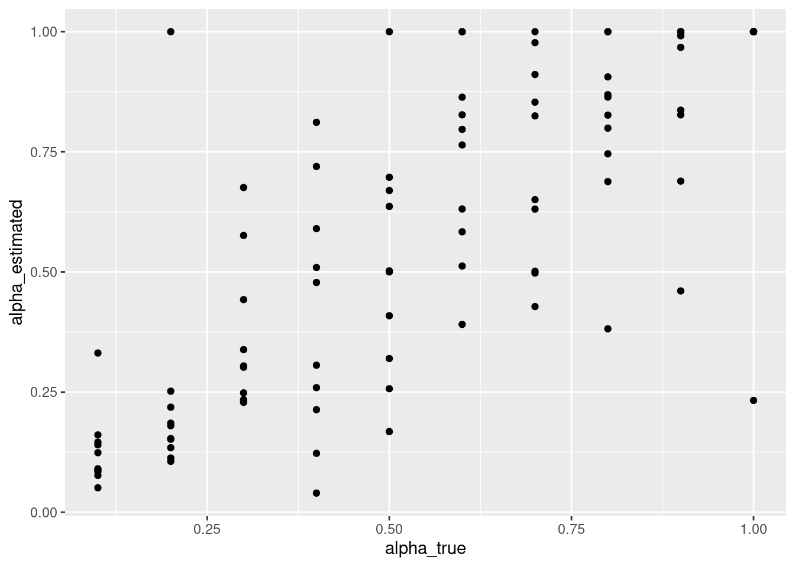
どうもβの推定値の中にとても大きな値になってしまったものがあるようです。βの最大値は制約をかけてないので，すごく大きくなることがあります。これも気になります。
parameter_recovery_mle %>%
ggplot(aes(x = beta_true, y = beta_estimated)) +
geom_point()
確認しにくいので，10以下の推定値のみをプロットして確認します。
parameter_recovery_mle %>%
filter(beta_estimated < 10) %>%
ggplot(aes(x = beta_true, y = beta_estimated)) +
geom_point()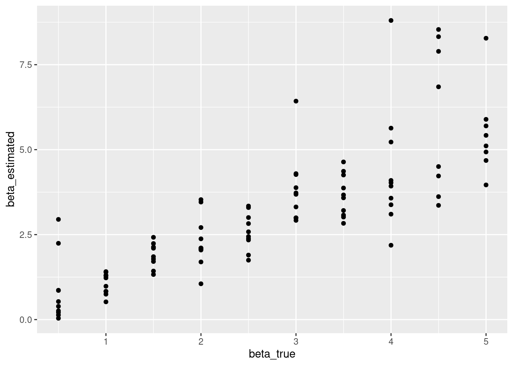
ベイズ推定
- 今度は，MCMCを用いたベイズ推定をしてみましょう！最尤推定のときは，optimizeでしたが，今度は，sampleを使います。違う点としては，MCMCの連鎖（チェーン）の本数（chains 4本が良いと思います），MCMCの初期のあまり収束してい部分をどのくらい捨てるか(iter_warmup, モデルに依存するのでtrace plotを見てから判断するのが良いと思います）,MCMCサンプルの数(iter_sampling 多いほうが推定は安定しますが，時間がかかります)， 並列化で使用するコアの数（parallel_chains，MCMCのチェーンを４とした場合は，４がいいですが，お手持ちのパソコンのコア数に依存します）を指定する点です。
q_learning_mcmc <- q_learning$sample(
data = list(trial = nrow(data_1),
reward = data_1$reward,
choice = data_1$choice + 1),
seed = 123,
chains = 4,
iter_warmup = 500,
iter_sampling = 1000,
parallel_chains = 4)結果の要約を確認してみましょう。
q_learning_mcmc$summary()## # A tibble: 3 x 10
## variable mean median sd mad q5 q95 rhat ess_bulk ess_tail
## <chr> <dbl> <dbl> <dbl> <dbl> <dbl> <dbl> <dbl> <dbl> <dbl>
## 1 lp__ -39.7 -39.4 1.11 0.772 -41.9 -38.7 1.00 1517. 1660.
## 2 alpha 0.335 0.318 0.115 0.107 0.181 0.557 1.00 1968. 1383.
## 3 beta 2.56 2.53 0.576 0.569 1.67 3.55 1.00 1882. 2052.以下はMCMCについての診断結果です。
q_learning_mcmc$cmdstan_diagnose()## Processing csv files: /tmp/Rtmpdwazpf/q_learning-202105180219-1-07d706.csv, /tmp/Rtmpdwazpf/q_learning-202105180219-2-07d706.csv, /tmp/Rtmpdwazpf/q_learning-202105180219-3-07d706.csv, /tmp/Rtmpdwazpf/q_learning-202105180219-4-07d706.csv
##
## Checking sampler transitions treedepth.
## Treedepth satisfactory for all transitions.
##
## Checking sampler transitions for divergences.
## No divergent transitions found.
##
## Checking E-BFMI - sampler transitions HMC potential energy.
## E-BFMI satisfactory for all transitions.
##
## Effective sample size satisfactory.
##
## Split R-hat values satisfactory all parameters.
##
## Processing complete, no problems detected.trace plot と事後分布をプロットしてみましょう。trace plotはMCMCのチェーンがきれいにまざっているか確認をしましょう。
# ggplotやtidyverseで扱いやすく処理する
mcmc_samples = as_draws_df(q_learning_mcmc$draws())
# alphaのtrace plot
mcmc_samples %>%
mutate(chain = as.factor(.chain)) %>%
ggplot(aes(x = .iteration, y = alpha, group = .chain, color = chain)) +
geom_line()# betaのtrace plot(ごく少数の大きな値でプロットできないので10以下に絞った)
mcmc_samples %>%
mutate(chain = as.factor(.chain)) %>%
filter(beta < 10) %>%
ggplot(aes(x = .iteration, y = beta, group = .chain, color = chain)) +
geom_line()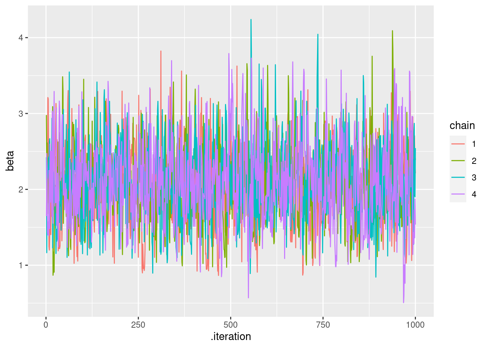
# alphaの事後分布
mcmc_samples %>%
ggplot() +
geom_histogram(aes(x=alpha),binwidth = 0.01)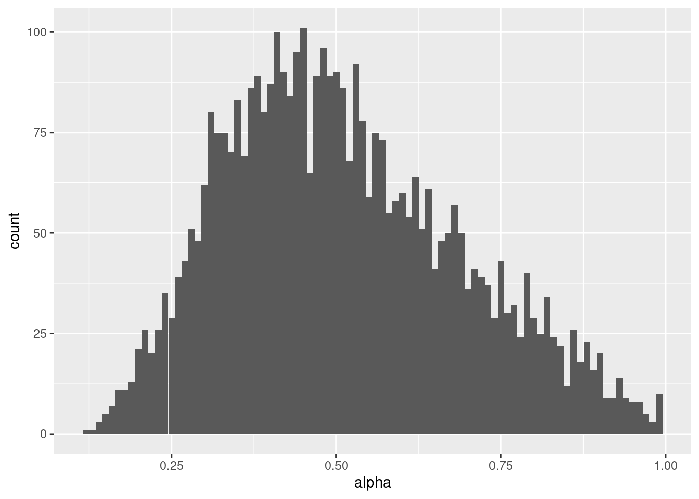
# betaの事後分布（ごく少数の大きな値があるとプロットできないので6以下に絞った）
mcmc_samples %>%
filter(beta < 6) %>%
ggplot() +
geom_histogram(aes(x=beta),binwidth = 0.1)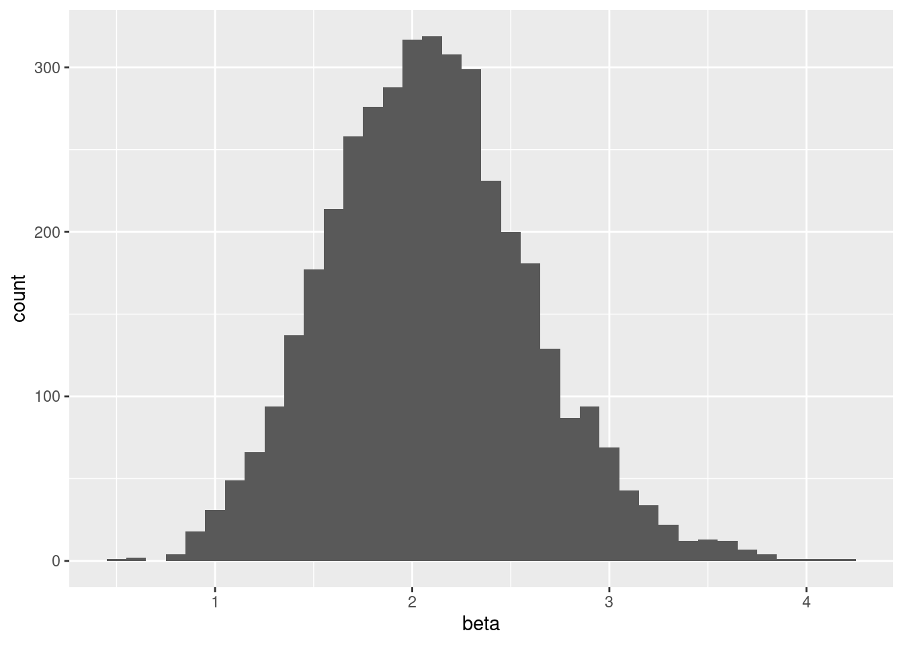
パラメータリカバリ（ベイズ推定）
ベイズ推定でもパラメータリカバリをしてみましょう。ただ，これは結構計算に時間がかかると思います。
alpha_true <- NULL
beta_true <- NULL
alpha_estimated <- NULL
beta_estimated <- NULL
beta_set <- 0
for (i in 1:10) {
alpha_set <- 0
beta_set = beta_set + 0.5
for (j in 1:10) {
alpha_set = alpha_set + 0.1
#データ生成
data_2 <- q_learning_sim(alpha = alpha_set, beta = beta_set, sim_data)
alpha_true[(i-1)*10 + j] <- alpha_set
beta_true[(i-1)*10 + j] <- beta_set
print(paste("進捗状況：",(i-1)*10 + j,"/100"))
#パラメータ推定(推定がミスった時用にtryCatch関数を準備)
tryCatch({
q_learning_mcmc <- q_learning$sample(
data = list(trial = nrow(data_2),
reward = data_2$reward,
choice = data_2$choice + 1),
seed = 123,
chains = 4,
iter_warmup = 500,
iter_sampling = 1000,
parallel_chains = 4)
mcmc_samples = as_draws_df(q_learning_mcmc$draws())
alpha_estimated[(i-1)*10 + j] <- mean(mcmc_samples$alpha)
beta_estimated[(i-1)*10 + j] <- mean(mcmc_samples$beta)
},error = function(e) {message(e)})
}
}
parameter_recovery_mcmc <- data.frame(alpha_true = alpha_true,
beta_true = beta_true,
alpha_estimated = alpha_estimated,
beta_estimated = beta_estimated)パラメータリカバリ（ベイズ推定）の確認
パラメータリカバリーのチェックをしましょう。散布図を書いて，真値（研究者がデータ生成時に設定した値）と推定された値が強い相関を示しているか確認します（データ生成時や推定時に確率的な変動が生じるので，完全一致はありません）。最尤推定と同様に，真値と結構ずれて低い推定値などがあって気になるところです。
parameter_recovery_mcmc %>%
ggplot(aes(x = alpha_true, y = alpha_estimated)) +
geom_point()最尤推定同様に，βがすごく大きくなることがあるのは，気になるところです。
parameter_recovery_mcmc %>%
ggplot(aes(x = beta_true, y = beta_estimated)) +
geom_point()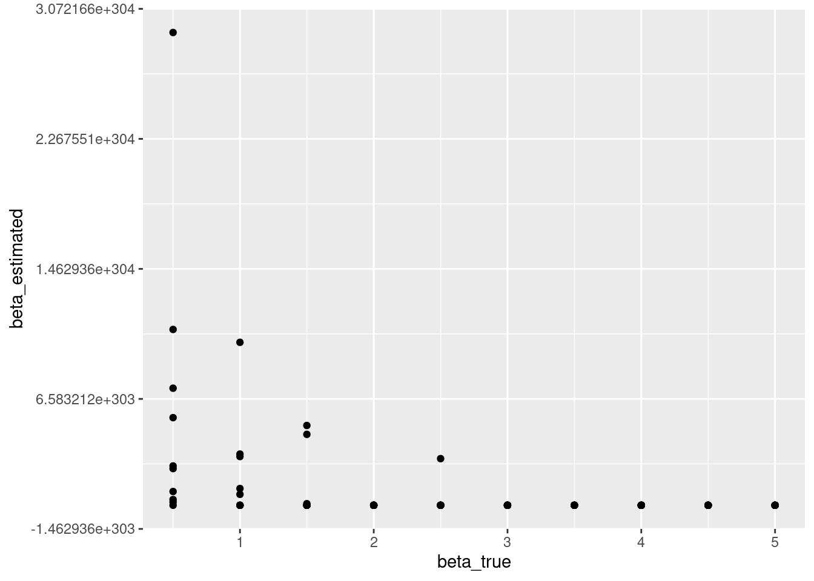
事前分布の活用
上記の最尤推定や無情報の事前分布の場合だと，ベータがとても大きな値になる点が気にかかるところです。そこで事前分布にも情報をもたせることにします。最尤推定にはないベイズ推定の特徴は，事前分布と尤度からパラメータの事後分布を推定する点です。例えば，逆転学習課題でのパタメータ推定において，おおよそパラメータの分布が分かっていると，それを事前分布に使って，推定を安定化させることができます。例えば，Kanen et al.(2019)では，学習率αはden Ouden et al.(2013)を参考にベータ分布を事前分布に用い，逆温度βはGershman(2016)を参考にガンマ分布を用いています（なお，Karen et al.(2019)で用いるのは逆温度ではなく報酬感受性ですが，意味は同じです）。
- 学習率αは極端に０や１に近い値が推定されることがありますが，実際は0や１に近い値を取ることは稀であると考えられるので，den Ouden et al.(2013)が用いているベータ分布(beta(α = 1.2,β = 1.2))のような形状だと推定が安定するかもしれません。
alpha = seq(0,1, length=100)
plot(alpha, dbeta(alpha, 1.2, 1.2), ylab="density", type ="l", col=4)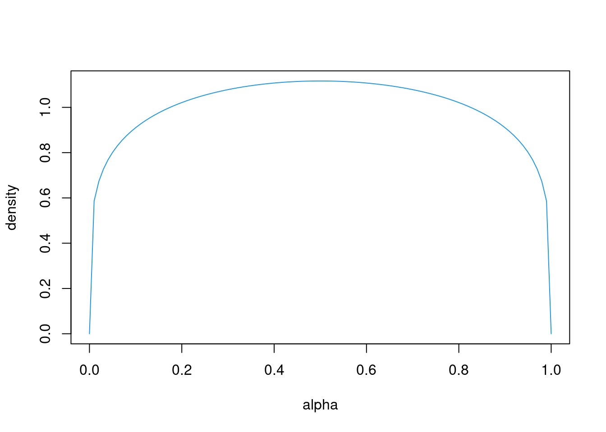
- 学習率βは極端に大きな値が推定されることがありますが，実際はあまりに大きな推定値は少ないですし，大きくてもその効果は地位ので，Gershman(2016)が用いているガンマ分布(gamma(α = 4.82,β = 0.88))のような形状だと，極端に大きな推定値を避けられるかもしれません。
beta = seq(0,15, length=500)
plot(beta, dgamma(beta, 4.82, 0.88), ylab="density", type ="l", col=4)情報の有る事前分布を用いた場合のパラメータリカバリ
上記を踏まえて，αの事前分布にベータ分布，βの事前分布にガンマ分布を仮定したStanコードを書いて，q_learning_prior.stanという名前で保存します。
data {
int<lower=1> trial;
int<lower=1,upper=2> choice[trial]; // 1 or 2
int<lower=0,upper=1> reward[trial]; // 0 or 1
}
parameters {
real<lower=0.0,upper=1.0> alpha; //学習率
real<lower=0.0> beta; //逆温度
}
model {
matrix[trial,2] Q;
Q[1, 1] = 0;
Q[1, 2] = 0;
//学習率の事前分布にベータ分布，逆温度の事前分布にガンマ分布
alpha ~ beta(1.2, 1.2);
beta ~ gamma(4.82, 0.88);
for ( t in 1:trial) {
// 対数尤度を足す
target += log(exp(beta*Q[t,choice[t]])/(exp(beta*Q[t,choice[t]])+exp(beta*Q[t,3-choice[t]])));
if (t < trial) {
// 選択された選択肢のQ値の更新
Q[t+1,choice[t]] = Q[t, choice[t]] + alpha * (reward[t] - Q[t, choice[t]]);
// 選択されなかった選択肢は更新しない
Q[t+1, 3- choice[t]] = Q[t, 3- choice[t]];
}
}
}q_learning_prior.stanを使って，パラメータリカバリを実施してみます。
まず，上記のモデルをコンパイルします。
q_learning_prior <- cmdstan_model('q_learning_prior.stan')まず，先程のdata_1で試してみます。
q_learning_prior_mcmc <- q_learning_prior$sample(
data = list(trial = nrow(data_1),
reward = data_1$reward,
choice = data_1$choice + 1),
seed = 123,
chains = 4,
iter_warmup = 500,
iter_sampling = 1000,
parallel_chains = 4)結果の要約を確認してみましょう。
q_learning_prior_mcmc$summary()## # A tibble: 3 x 10
## variable mean median sd mad q5 q95 rhat ess_bulk ess_tail
## <chr> <dbl> <dbl> <dbl> <dbl> <dbl> <dbl> <dbl> <dbl> <dbl>
## 1 lp__ -38.6 -38.2 1.13 0.750 -40.8 -37.5 1.00 1602. 1730.
## 2 alpha 0.327 0.310 0.109 0.103 0.184 0.525 1.00 1838. 1656.
## 3 beta 2.73 2.70 0.553 0.538 1.88 3.69 1.00 1887. 2107.以下はMCMCについての診断結果です。
q_learning_prior_mcmc$cmdstan_diagnose()## Processing csv files: /tmp/Rtmpdwazpf/q_learning_prior-202105180224-1-7b3b19.csv, /tmp/Rtmpdwazpf/q_learning_prior-202105180224-2-7b3b19.csv, /tmp/Rtmpdwazpf/q_learning_prior-202105180224-3-7b3b19.csv, /tmp/Rtmpdwazpf/q_learning_prior-202105180224-4-7b3b19.csv
##
## Checking sampler transitions treedepth.
## Treedepth satisfactory for all transitions.
##
## Checking sampler transitions for divergences.
## No divergent transitions found.
##
## Checking E-BFMI - sampler transitions HMC potential energy.
## E-BFMI satisfactory for all transitions.
##
## Effective sample size satisfactory.
##
## Split R-hat values satisfactory all parameters.
##
## Processing complete, no problems detected.それでは，先程と同じデータでパラメータリカバリーをしてみましょう！
alpha_true <- NULL
beta_true <- NULL
alpha_estimated <- NULL
beta_estimated <- NULL
beta_set <- 0
for (i in 1:10) {
alpha_set <- 0
beta_set = beta_set + 0.5
for (j in 1:10) {
alpha_set = alpha_set + 0.1
#データ生成
data_2 <- q_learning_sim(alpha = alpha_set, beta = beta_set, sim_data)
alpha_true[(i-1)*10 + j] <- alpha_set
beta_true[(i-1)*10 + j] <- beta_set
print(paste("進捗状況：",(i-1)*10 + j,"/100"))
#パラメータ推定(推定がミスった時用にtryCatch関数を準備)
tryCatch({
q_learning_prior_mcmc <- q_learning_prior$sample(
data = list(trial = nrow(data_2),
reward = data_2$reward,
choice = data_2$choice + 1),
seed = 123,
chains = 4,
iter_warmup = 500,
iter_sampling = 1000,
parallel_chains = 4)
mcmc_samples = as_draws_df(q_learning_prior_mcmc$draws())
alpha_estimated[(i-1)*10 + j] <- mean(mcmc_samples$alpha)
beta_estimated[(i-1)*10 + j] <- mean(mcmc_samples$beta)
},error = function(e) {message(e)})
}
}
parameter_recovery_prior_mcmc <- data.frame(alpha_true = alpha_true,
beta_true = beta_true,
alpha_estimated = alpha_estimated,
beta_estimated = beta_estimated)有情報事前分布を用いた場合のパラメータリカバリの確認
いい感じにパラメータリカバリーできています。無情報事前分布のときのようにすごく大きなβが発生しなくなっています。
parameter_recovery_prior_mcmc %>%
ggplot(aes(x = alpha_true, y = alpha_estimated)) +
geom_point()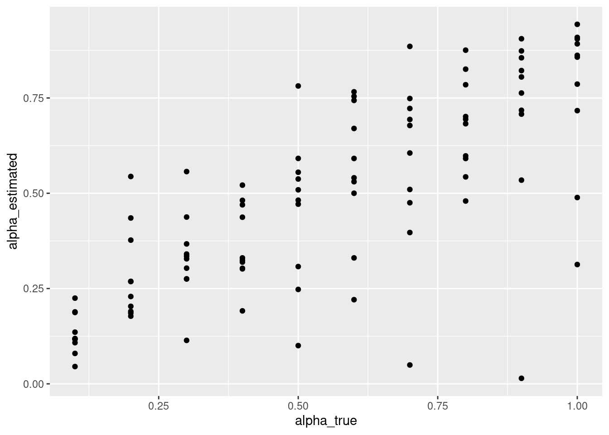
parameter_recovery_prior_mcmc %>%
ggplot(aes(x = beta_true, y = beta_estimated)) +
geom_point()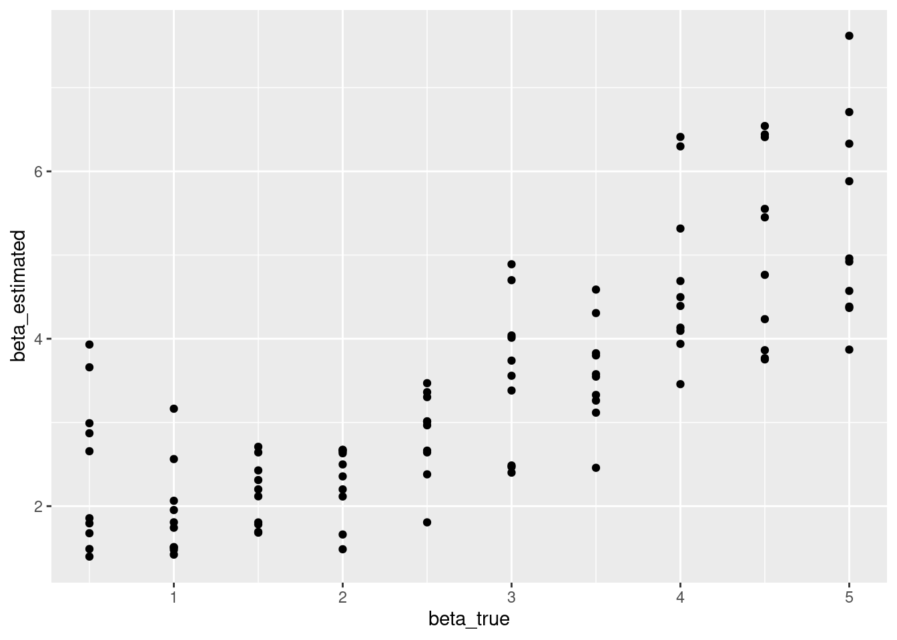
C データ収集と行動データを確認
「強化学習モデルを使ったモデル・フィッティング１」と同じデータを使います。以下のコードで５名分のlong形式のデータセットを準備します。
setwd("data")
file_names <- list.files()
setwd("..")
# 確認用の図を入れる場所を確保
plot_check <- NULL
# データを入れる場所を確保
data_long <- NULL
for (i in 1:length(file_names)) {
# file_namesのi番目のデータを読み込んで,上記の処理をして，tmp_dataに格納
tmp_data <- read_csv(paste("data",file_names[i], sep = "/")) %>%
filter(trial_type == "html-button-response") %>%
mutate(id = rep(i,80),
trial = 1:80,
s1_prob = rep(c(0.2,0.8),each = 40),
reward = ifelse(button_pressed == 0, reward_s1, reward_s2)) %>%
select(id, trial,choice=button_pressed, rt, reward, s1_prob,reward_s1, reward_s2)
# データの保存
data_long <- rbind(data_long, tmp_data)
# plot
plot_check[[i]] <- ggplot(tmp_data, aes(x = trial, y = s1_prob)) +
geom_line() +
geom_line(aes(x= trial, y = choice), colour = 'blue') +
geom_point(aes(x = trial, y = reward),colour = 'red')
}D パラメータ推定
個人のパラメータ推定（無情報事前分布）
Sub01
data_individual <- data_long %>%
filter(id == 1)
q_learning_mcmc <- q_learning$sample(
data = list(trial = nrow(data_individual),
reward = data_individual$reward,
choice = data_individual$choice + 1),
seed = 123,
chains = 4,
iter_warmup = 500,
iter_sampling = 1000,
parallel_chains = 4)
q_learning_mcmc$summary()
q_learning_mcmc$cmdstan_diagnose()結果のプロット
q_learning_mcmc <- as_draws_df(q_learning_mcmc$draws())
# alphaのtrace plot
q_learning_mcmc %>%
mutate(chain = as.factor(.chain)) %>%
ggplot(aes(x = .iteration, y = alpha, group = .chain, color = chain)) +
geom_line()
# betaのtrace plot
q_learning_mcmc %>%
mutate(chain = as.factor(.chain)) %>%
filter(beta < 1000) %>%
ggplot(aes(x = .iteration, y = beta, group = .chain, color = chain)) +
geom_line()# alphaの事後分布
q_learning_mcmc %>%
ggplot() +
geom_histogram(aes(x=alpha),binwidth = 0.01)# betaの事後分布
q_learning_mcmc %>%
filter(beta < 1000) %>%
ggplot() +
geom_histogram(aes(x=beta),binwidth = 0.1)q_values <- q_learning_ll(mean(mcmc_samples$alpha),mean(mcmc_samples$beta),data_individual)個人のパラメータ推定（有情報事前分布）
sub01
data_individual <- data_long %>%
filter(id == 1)
q_learning_prior_mcmc <- q_learning_prior$sample(
data = list(trial = nrow(data_individual),
reward = data_individual$reward,
choice = data_individual$choice + 1),
seed = 123,
chains = 4,
iter_warmup = 500,
iter_sampling = 1000,
parallel_chains = 4)
q_learning_prior_mcmc$summary()
q_learning_prior_mcmc$cmdstan_diagnose()結果のプロット
q_learning_prior_mcmc <- as_draws_df(q_learning_prior_mcmc$draws())
# alphaのtrace plot
q_learning_prior_mcmc %>%
mutate(chain = as.factor(.chain)) %>%
ggplot(aes(x = .iteration, y = alpha, group = .chain, color = chain)) +
geom_line()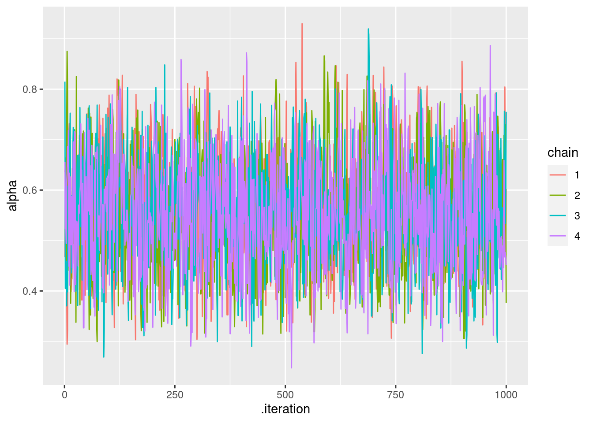
# betaのtrace plot
q_learning_prior_mcmc %>%
mutate(chain = as.factor(.chain)) %>%
ggplot(aes(x = .iteration, y = beta, group = .chain, color = chain)) +
geom_line()# alphaの事後分布
q_learning_prior_mcmc %>%
ggplot() +
geom_histogram(aes(x=alpha),binwidth = 0.01)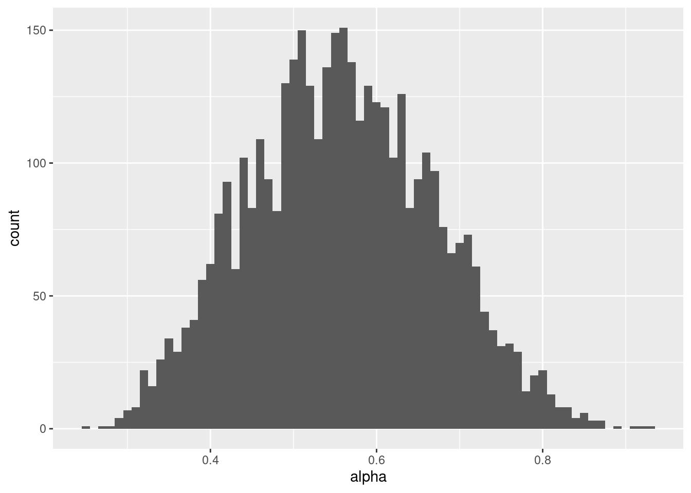
# betaの事後分布
q_learning_prior_mcmc %>%
ggplot() +
geom_histogram(aes(x=beta),binwidth = 0.1)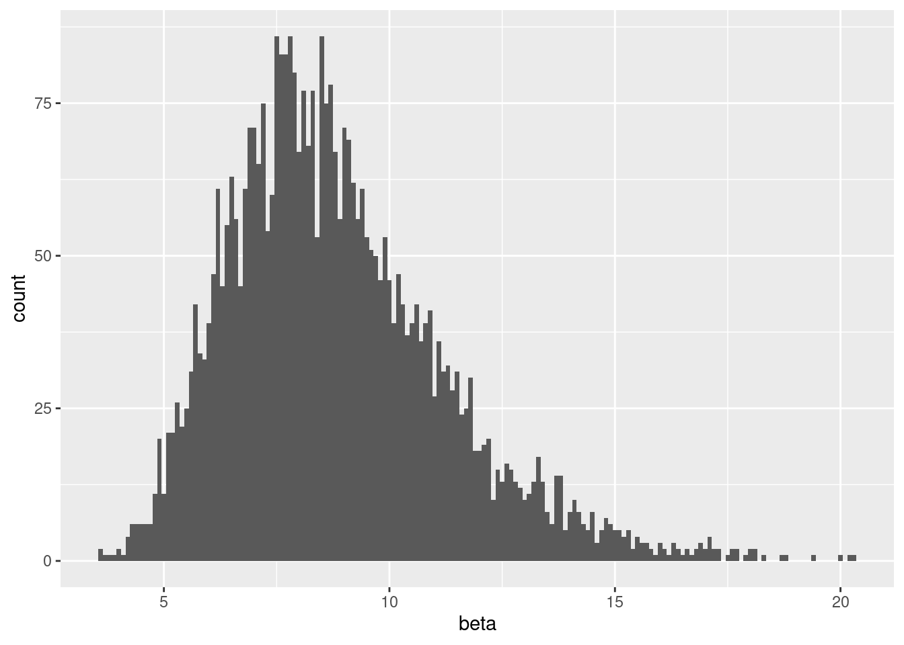
q_values <- q_learning_ll(mean(mcmc_samples$alpha),mean(mcmc_samples$beta),data_individual)sub01のトレースプロットや事後分布をみる限りでは，有情報事前分布の方が推定がうまくいっているように見えます。
さて，ここまでで，ベイズ推定が出来るようになりました。次は「強化学習モデル: ベイズ推定(2)」で，モデル比較などに取り組みます。
引用・参考文献
- Busemeyer, J. R., & Diederich, A. (2010). Cognitive Modeling. SAGE.
- den Ouden, H. E. M., Daw, N. D., Fernandez, G., Elshout, J. A., Rijpkema, M., Hoogman, M., Franke, B., & Cools, R. (2013). Dissociable effects of dopamine and serotonin on reversal learning. Neuron, 80(4), 1090–1100.
- Gershman, S. J. (2016). Empirical priors for reinforcement learning models. Journal of Mathematical Psychology, 71, 1–6.
- Heathcote, A., Brown, S. D., & Wagenmakers, E.-J. (2015). An Introduction to Good Practices in Cognitive Modeling. In B. U. Forstmann & E.-J. Wagenmakers (Eds.), An Introduction to Model-Based Cognitive Neuroscience (pp. 25–48). Springer New York.
- Kanen, J. W., Ersche, K. D., Fineberg, N. A., Robbins, T. W., & Cardinal, R. N. (2019). Computational modelling reveals contrasting effects on reinforcement learning and cognitive flexibility in stimulant use disorder and obsessive-compulsive disorder: remediating effects of dopaminergic D2/3 receptor agents. Psychopharmacology, 236(8), 2337–2358.
- Palminteri, S., Wyart, V., & Koechlin, E. (2017). The Importance of Falsification in Computational Cognitive Modeling. Trends in Cognitive Sciences, 21(6), 425–433.